第 12 章
交互组件
本章共 6 个小节 · PySide6 Basic Tutorial
本章要点：
进度条（QProgressBar）
滑动条（QSlider）和仪表盘（QDial）
系统托盘图标
工具提示
12.1
进度条
QProgressBar组件的功能是显示当前正在运行的任务进度，用户可以根据已处理的进度来决定继续等待还是取消任务。进度条常用的方案有大文件下载、数据压缩等。
进度条默认是水平呈现的，可通过setOrientation方法修改为垂直呈现。为了让进度条能按照应用需求呈现进度，QProgressBar组件一般要设置3个整数值。
最大值：通过setMaximum方法设置，例如100。
最小值：通过setMinimum方法设置，例如0。
当前值：当前进度，通过 setValue方法设置，如50。
如果当前进度超出最大值或最小值，QProgressBar组件就会重置，变为无进度显示状态。调用setRange方法可以同时设置最大值和最小值，例如：
progressBar.setRange(0, 800)
上述代码设置 QProgressBar的最大值为 800，最小值为 0。
12.1.1 示例：水平和垂直进度条本示例将演示 QProgressBar 组件的两个呈现方向。默认水平呈现，可通过编程方式改为垂直呈现。
核心代码如下：
#窗口
window = QWidget()
#设置窗口大小
window.resize(420, 380)
#设置布局
layout = QFormLayout()
window.setLayout(layout)
#第一个进度条，水平方向
pb1 = QProgressBar(window)
#最大值100，最小值0
pb1.setRange(0, 100)
#设置当前值
pb1.setValue(67)
#第二个进度条，垂直方向
pb2 = QProgressBar(window)
#最大值40，最小值1
pb2.setMaximum(40)
pb2.setMinimum(1)
#设置当前值
pb2.setValue(13)
#修改方向
pb2.setOrientation(Qt.Orientation.Vertical)
#将进度条组件添加到布局中
layout.addRow("水平进度条：", pb1)
layout.addRow("垂直进度条：", pb2)
#显示窗口
window.show()
示例窗口使用 QFormLayout类进行布局，第一行显示水平方向的进度条，第二行将显示垂直方向的进度条。最终效果如图12-1所示。
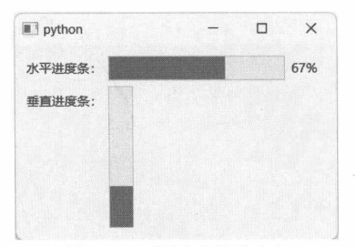
图 12-1 不同方向的进度条
12.1.2 示例：模拟耗时任务本示例将模拟一个需要长时间运行的任务，并使用QProgressBar组件实时显示任务的进度。通常，耗时任务应放在新线程上执行（非主线程)，并通过信号来报告进度。
示例的实现步骤如下。
模拟任务将运行在独立的线程上，需要从 QThread 派生一个自定义类。本示例将命名为 MyThread。 class MyThread(QThread):
......
在MyThread 类中定义 reportProgress 信号，用于向主线程实时报告进度。该信号包含一个整型值，表示当前处理进度。 reportProgress = Signal(int)
定义 setData 方法，用于接收来自主线程的数据（进度的最小值和最大值）。 def setData(self, minimum: int, maximum: int):
self._max = maximum
self._min = minimum
重写 run 方法，实现模拟的耗时任务。 def run(self):
if not hasattr(self, '_max'):
self._max = 100
if not hasattr(self, '_min'):
self._min = 0
#模拟长时间运行的任务
current = self._min
while current <= self._max:
QThread.msleep(100)
#报告进度
self.reportProgress.emit(current)
current += 1
定义窗口类 MyWindow，派生自 QWidget 类。 class MyWindow(QWidget):
......
定义 sendData 信号，与 MyThread 类的 setData 方法连接后，可以实现向新线程传递数据。 sendData = Signal(int, int)
该信号带有两个参数，分别是进度条的最小值与最大值。
在 __init__ 方法中初始化窗口。 def __init__(self):
super().__init__()
self.resize(280, 160)
#布局
layout = QVBoxLayout()
self.setLayout(layout)
#进度条
self.pb = QProgressBar(self)
#设置最大值、最小值
self.pb.setRange(0, 80)
layout.addWidget(self.pb)
#按钮
self.btn = QPushButton("启动任务", self)
layout.addWidget(self.btn)
实例化 MyThread 类。 self.theThread = MyThread(self)
建立当前窗口的 sendData 信号与 MyThread 对象的 setData 方法的连接。 self.sendData.connect(self.theThread.setData)
将 MyThread 对象的 reportProgress 信号连接到当前窗口的 setProgress 方法。 self.theThread.reportProgress.connect(self.setProgress)
实现 setProgress 方法，更新 QProgressBar 组件的当前进度值。 def setProgress(self, p: int):
self.pb.setValue(p)
与 MyThread 对象的 started、finished 信号（从 QThread 类继承）连接。在新线程启动或完成时改变 QPushButton 组件的可用状态（任务执行过程中禁用按钮，任务完成后恢复）。 self.theThread.started.connect(self.onStarted)
self.theThread.finished.connect(self.onFinished)
......
def onStarted(self):
self.btn.setEnabled(False)
def onFinished(self):
self.btn.setEnabled(True)
self.pb.reset() #重置进度条
连接 QPushButton 组件的 clicked 信号，在按钮被单击后启动耗时任务。 self.btn.clicked.connect(self.onBtnClicked)
......
def onBtnClicked(self):
#发出 sendData信号，告知新线程进度的最小值和最大值
self.sendData.emit(self.pb.minimum(), self.pb.maximum())
#启动新线程
self.theThread.start()
初始化和显示窗口。 wind = MyWindow()
wind.show()
运行示例程序，然后单击“启动任务”按钮，模拟的耗时任务开始执行。此时QProgressBar组件的进度会实时更新，如图12-2所示。
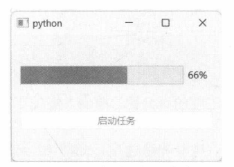
图12-2 实时更新进度条
12.1.3 示例：设置进度文本的格式调用 QProgressBar 组件的 setFormat 方法可以修改进度文本的显示格式。格式文本是通过替换占位符的方式实现的。三种占位符及其含义如下。
%p：表示当前进度的百分比，字符串末尾不包含百分号（%）。
%v：表示当前进度值，即 QProgressBar的 value方法返回的值。
%m：表示总进度值，即maximum-minimum。
假设进度条的最大值为80，最小值为0，当前值为20，那么三个占位符对应的内容如下：
%p:25
%v：20
%m：80
若setFormat方法设置的格式字符串为“已完成%v步，共%m步”，最后呈现出来的结果是“已完成20步，共80步”。
本示例将在窗口中放置3个按钮，单击它们可以切换QProgressBar组件的显示格式。关键代码如下：
#窗口
window = QWidget()
window.resize(360, 100)
window.setWindowTitle("Demo")
#布局
layout = QGridLayout(window)
#进度条
pb = QProgressBar(window)
layout.addWidget(pb, 0, 0, 1, 3)
#让文本显示在进度条中间
pb.setAlignment(Qt.AlignmentFlag.AlignCenter)
#设置最小值
pb.setMinimum(0)
#设置最大值
pb.setMaximum(120)
#设置当前值
pb.setValue(48)
#3个按钮
btn1 = QPushButton("格式1", window)
btn2 = QPushButton("格式2", window)
btn3 = QPushButton("格式 3", window)
layout.addWidget(btn1, 1, 0)
layout.addWidget(btn2, 1, 1)
layout.addWidget(btn3, 1, 2)
#连接信号
btn1.clicked.connect(lambda: pb.setFormat("当前百分比: %p%"))
btn2.clicked.connect(lambda: pb.setFormat("真实进度值：%v"))
btn3.clicked.connect(lambda: pb.setFormat("%v / %m"))
#显示窗口
window.show()
运行示例程序，Qt默认显示当前进度的百分比。单击“格式2”按钮，将显示实际进度值，如图12-3所示。
单击“格式3”按钮，将呈现当前进度和总进度，如图12-4所示。
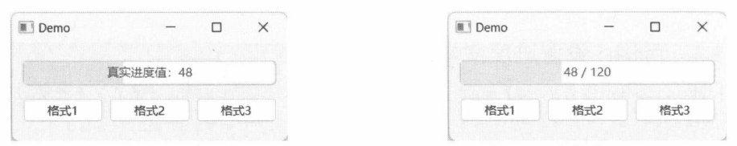
图 12-3 实际进度值 图 12-4当前进度和总进度
12.2
滑动条
QSlider组件允许用户拖动滑块来输入整数值。该组件适用于有范围限制的数值，如表示颜色的R、G、B值，就可以使用QSlider组件进行输入，其范围为[0,255]。
QSlider组件默认是垂直显示的，若需要水平呈现，可以调用setOrientation方法进行修改。与QProgressBar 组件相似，QSlider 组件也通过 setMaximum、setMinimum 和 setRange 方法设置最大值与最小值（这几个方法继承自QAbstractSlider类)。
setValue方法可设置滑块的当前值。当用户设置了新的值，QSlider组件会发出 valueChanged信号。
该信号带有一个整型参数，表示最新设置的值。
QSlider组件默认不显示刻度，可以通过 setTickPosition方法进行设置。该方法的参数为TickPosition枚举，它定义的值如下。
NoTicks：不显示刻度。
TicksAbove：刻度仅显示在滑动条的上方。
TicksLeft：刻度仅显示在滑动条的左侧。
TicksBelow：刻度仅显示在滑动条的下方。
TicksRight：刻度仅显示在滑动条的右侧。
TicksBothSides：刻度同时显示在滑动条的两边。
当 QSlider 组件水平呈现时，应使用 TicksAbove、TicksBelow；当 QSlider 组件垂直呈现时，应使用 TicksLeft 和 TicksRight。
12.2.1 示例：处理 valueChanged 信号修改QSlider组件的值有多种方法，例如鼠标拖动滑块、鼠标滚轮、键盘上的方向键。不管用户以何种方式与QSlider组件交互，QSlider 组件都会发出 valueChanged 信号，以指示数值已更新。将代码与该信号连接，可以获取QSlider组件最新的值。
本示例将通过 QLabel 组件来实时显示 QSlider组件的值。示例窗口使用QVBoxLayout 布局，布局内包含QSlider组件和QLabel组件。关键代码如下：
window = QWidget()
#布局
layout = QVBoxLayout()
window.setLayout(layout)
#滑动条
slider = QSlider(window)
layout.addWidget(slider)
#改为水平方向
slider.setOrientation(Qt.Orientation.Horizontal)
#设置最大值和最小值
slider.setRange(0, 40)
#标签
label = QLabel(window)
layout.addWidget(label)
QSlider组件默认是垂直显示的，因此需要调用setOrientation(Qt.Orientation.Horizontal)改为水平显示。
建立 valueChanged 信号与 onValChanged 函数的连接，更新 QLabel 组件的文本内容。
def onValChanged(val: int):
label.setText(f"当前值:{val}")
slider.valueChanged.connect(onValChanged)
运行示例程序，拖动滑块来调整 QSlider 组件的值，QLabel 组件实时显示最新的数值，如图 12-5 所示。
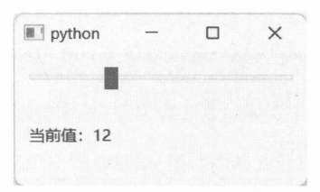
图 12-5 显示 QSlider 组件的值
12.2.2 示例：设置刻度的显示位置本示例主要演示 setTickPosition方法的使用。示例窗口使用QGridLayout布局，第一行有4个QLabel组件，用于显示说明文本；第二行有4个QSlider组件，代表4种刻度显示方式。
示例的具体实现步骤如下。
实例化QWidget对象，作为程序主窗口。 win = QWidget()
为窗口设置布局对象。
layout = QGridLayout()
win.setLayout(layout)
布局的第一行是4个QLabel组件。 lb1 = QLabel(win)
lb1.setText("无刻度")
layout.addWidget(lb1, 0, 0, Qt.AlignmentFlag.AlignHCenter)
lb2 = QLabel(win)
lb2.setText("刻度在左侧")
layout.addWidget(lb2, 0, 1, Qt.AlignmentFlag.AlignHCenter)
lb3 = QLabel(win)
lb3.setText("刻度在右侧")
layout.addWidget(lb3, 0, 2, Qt.AlignmentFlag.AlignHCenter)
lb4 = QLabel(win)
lb4.setText("两侧都有刻度")
layout.addWidget(lb4, 0, 3, Qt.AlignmentFlag.AlignHCenter)
布局的第二行是 4 个 QSlider 组件。 sld1 = QSlider(win)
sld1.setRange(0, 20)
sld1.setTickPosition(QSlider.TickPosition.NoTicks)
layout.addWidget(sld1, 1, 0, Qt.AlignmentFlag.AlignHCenter)
sld2 = QSlider(win)
sld2.setRange(0, 20)
sld2.setTickPosition(QSlider.TickPosition.TicksLeft)
layout.addWidget(sld2, 1, 1, Qt.AlignmentFlag.AlignHCenter)
sld3 = QSlider(win)
sld3.setRange(0, 20)
sld3.setTickPosition(QSlider.TickPosition.TicksRight)
layout.addWidget(sld3, 1, 2, Qt.AlignmentFlag.AlignHCenter)
sld4 = QSlider(win)
sld4.setRange(0, 20)
sld4.setTickPosition(QSlider.TickPosition.TicksBothSides)
layout.addWidget(sld4, 1, 3, Qt.AlignmentFlag.AlignHCenter)
4个QSlider组件的区别是调用 setTickPosition方法所设置的刻度位置。
显示窗口。 win.show()
运行示例程序，结果如图12-6所示。
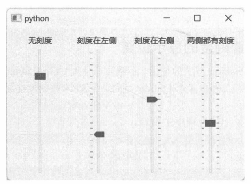
图 12-6 刻度的 4 种显示方式
12.2.3 步长在按下键盘上的方向键时，QSlider组件数值的变化量称为步长。setSingleStep和 setPageStep方法都可以设置步长值。
setSingleStep方法是设置每次按下方向键（上、下、左、右箭头）后数值的变化量。假设QSlider组件是水平呈现的，当前值是7，调用 setSingleStep(2)，那么按下“→”键后，QSlider的值会增加2，变成9。再按一下“←”键，QSlider组件的值减去2，变回7。
setPageStep 方法用于设置 Page Up 和 Page Down 按键所产生的步长值。假设 QSlider 组件是垂直显示的，当前值是10，若调用 setPageStep(5)，那么按下 Page Up 键，QSlider 组件的值就变为 15。
12.2.4 示例：设置 QSlider 组件的步长本示例定义的主窗口类为 MyWindow，派生自QMainWindow。窗口左侧是 QDockWidget 组件，其中包含4个QSpinBox组件，分别用于修改QSlider组件的最大值、最小值、单步步长以及页面步长。
单步步长调用 setSingleStep 方法设置，页面步长使用 setPageStep 方法设置。
示例的具体实现步骤如下。
在 MyWindow类中实现 initCentral 方法。为主窗口创建内容区域。内容区域包括 QSlider 和QLabel 组件。QLabel 组件用于显示 QSlider 组件的值。 def initCentral(self):
frame = QFrame()
frame.setFrameShape(QFrame.Shape.Box)
layout = QBoxLayout(QBoxLayout.Direction.TopToBottom)
frame.setLayout(layout)
#滑动条
self.slider = QSlider(frame)
layout.addWidget(self.slider, 1, Qt.AlignmentFlag.AlignHCenter)
#标签
lb = QLabel(frame)
layout.addWidget(lb, 0)
self.slider.valueChanged.connect(lambda v: lb.setText(f'当前值: {v}'))
self.setCentralWidget(frame)
实现 initDockWindows 方法，初始化停靠在主窗口左侧的 DockWidget 组件。该 QDockWidget的内容区域包括4个QSpinBox组件。 下面两个 QSpinBox组件用于设置QSlider组件的最大值和最小值。 spboxMax = QSpinBox(content)
spboxMax.setRange(20, 200)
#valueChanged 信号连接到 QSlider 组件的 setMaximum 方法
spboxMax.valueChanged.connect(self.slider.setMaximum)
layout.addRow("最大值：",spboxMax)
spboxMin = QSpinBox(content)
spboxMin.setRange(0, 100)
spboxMin.valueChanged.connect(self.slider.setMinimum)
layout.addRow("最小值：",spboxMin)
下面两个 QSpinBox 组件用于设置 QSlider 组件的单步步长和页面步长。 spboxSingleStep = QSpinBox(content)
spboxSingleStep.setRange(1, 10)
#连接信号
spboxSingleStep.valueChanged.connect(self.slider.setSingleStep)
layout.addRow("单步步长:", spboxSingleStep)
spboxPageStep = QSpinBox(content)
spboxPageStep.setRange(3, 20)
#连接信号
spboxPageStep.valueChanged.connect(self.slider.setPageStep)
layout.addRow("页面步长：", spboxPageStep)
initDockWindows 方法的完整代码如下： def initDockWindows(self):
self.dock = QDockWidget("基本参数", self)
self.dock.setFeatures(QDockWidget.DockWidgetFeature.NoDockWidgetFeatures)
#Dock窗口的内容组件
content = QFrame()
content.setFrameShape(QFrame.Shape.Panel)
layout = QFormLayout()
content.setLayout(layout)
#下面两个组件用于设置滑动条的最大值和最小值
spboxMax = QSpinBox(content)
spboxMax.setRange(20, 200)
#valueChanged 信号连接到QSlider 组件的 setMaximum 方法
spboxMax.valueChanged.connect(self.slider.setMaximum)
layout.addRow("最大值：", spboxMax)
spboxMin = QSpinBox(content)
spboxMin.setRange(0, 100)
spboxMin.valueChanged.connect(self.slider.setMinimum)
layout.addRow("最小值：",spboxMin)
layout.addItem(QSpacerItem(0, 20))
#以下QSpinBox用于设置步长
spboxSingleStep = QSpinBox(content)
spboxSingleStep.setRange(1, 10)
#连接信号
spboxSingleStep.valueChanged.connect(self.slider.setSingleStep)
layout.addRow("单步步长:",spboxSingleStep)
spboxPageStep = QSpinBox(content)
spboxPageStep.setRange(3, 20)
#连接信号
spboxPageStep.valueChanged.connect(self.slider.setPageStep)
layout.addRow("页面步长:",spboxPageStep)
#为QSpinBox设置默认值
spboxMax.setValue(60)
spboxMin.setValue(0)
spboxSingleStep.setValue(2)
spboxPageStep.setValue(5)
self.dock.setWidget(content)
#将 Dock窗口添加到主窗口中
self.addDockWidget(Qt.DockWidgetArea.LeftDockWidgetArea, self.dock)
4 个 QSpinBox 的 valueChanged 信号依次连接到 QSlider 组件的 setMaximum、setMinimum、setSingleStep 和 setPageStep 方法。上述方法在 QSpinBox 组件被修改后会自动调用。
初始化并显示主窗口。 win = MyWindow()
win.show()
运行示例程序，在窗口左侧的Dock窗口中，设置QSlider组件的最大值为80，最小值为10，单步步长值为2，页面步长值为5，如图12-7所示。
此时，滑动条（QSlider组件）的最小值是 10，按下 Page Up 键，QSlider组件的值变为 15；再按一次 Page Up键，QSlider 组件的值就变为20，如图12-8所示。
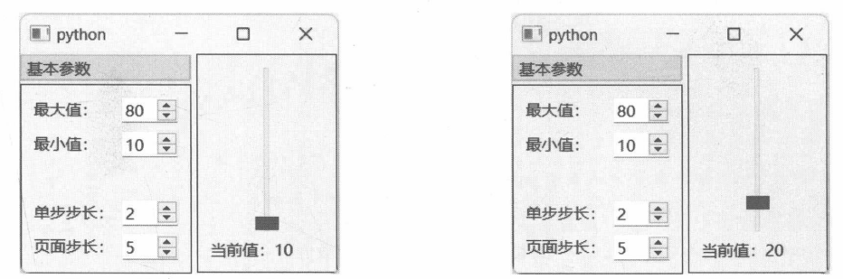
图 12-7 设置 QSlider 的步长 图 12-8 QSlider 组件的最新值
12.3
仪表盘
仪表盘组件（QDial）的外观为正方形，用户通过旋转表针来设置当前数值。QDial的基类是QAbstractSlider，因此它的使用方法和 QSlider 相似，也支持使用键盘上的方向键或 Page Up 键、PageDown 键来旋转表针。
12.3.1 示例：使用 QDial 组件本示例将在窗口上创建一个 QDial 组件和一个 QLabel 组件，通过 QDial 组件的 valueChanged 信号让 QLabel 组件实时更新。
关键代码如下：
#应用程序窗口
window = QWidget()
#布局
layout = QVBoxLayout()
window.setLayout(layout)
# QDial 组件
dial = QDial(window)
#设置最大值和最小值
dial.setRange(0, 100)
layout.addWidget(dial, 1)
# QLabel 组件
lb = QLabel(window)
layout.addWidget(lb, 0)
#连接valueChanged 信号
dial.valueChanged.connect(lambda val: lb.setText(f"当前数值：{val}"))
#显示窗口
window.show()
和QSlider组件一样，设置数值范围时既可以用 setRange方法，也可以使用 setMaximum、setMinimum方法。
运行示例程序后，通过单击和拖动鼠标，就能调整QDial组件的值，如图12-9所示。
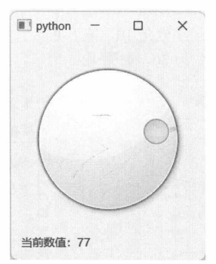
图 12-9 QDial 组件的当前数值
12.3.2 示例：显示刻度线QDial 组件的刻度线默认是隐藏的，若要显示，则需要调用 setNotchesVisible方法，并将 visible参数设置为True。还可以调用 setNotchTarget方法来调节刻度线的密集程度，参数值表示刻度线之间的像素距离。默认为3.7像素。
本示例将演示带刻度线的QDial组件。关键代码如下：
#程序窗口
window = QWidget()
window.resize(330, 350)
#布局
layout = QGridLayout()
window.setLayout(layout)
# QDial 组件
dial = QDial(window)
layout.addWidget(dial, 0, 0)
layout.setRowStretch(0, 1)
#设置范围
dial.setMaximum(200)
dial.setMinimum(1)
#显示刻度
dial.setNotchesVisible(True)
#设置刻度线之间的距离
dial.setNotchTarget(2.5)
# QLabel 组件
lbVal = QLabel(window)
layout.addWidget(lbVal, 1, 0)
layout.setRowStretch(1, 0)
#连接信号
def onValChanged(value: int):
#设置QLabel组件的文本
lbVal.setText("当前数值：{val}".format(val = value))
dial.valueChanged.connect(onValChanged)
#显示窗口
window.showNormal()
setNotchesVisible(True)表示开启显示刻度线功能，刻度线之间的距离设置为2.5像素。
运行效果如图12-10所示。
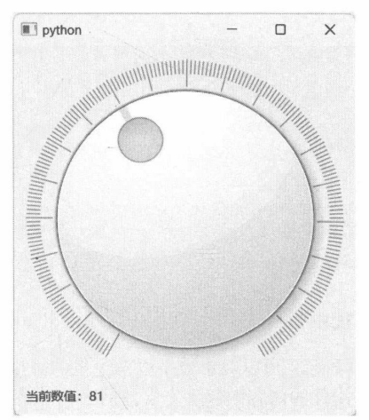
图12-10 显示刻度线
注意调整窗口尺寸。如果窗口过小，QDial组件的刻度线会显示不全。
12.3.3 wrapping属性使用 setWrapping 方法可以修改 wrapping 属性，当设置为 True 时，QDial 组件刻度线的起点与终点相连，表针可以朝任意方向旋转。通过下面的代码可以直观地对比出开启与未开启wrapping属性的区别：
# QDial 组件
dial = QDial(window)
#最大值
dial.setMaximum(100)
#最小值
dial.setMinimum(0)
#显示刻度
dial.setNotchesVisible(True)
......
# QCheckBox 组件
ckbWrapping = QCheckBox(window)
ckbWrapping.setText("Set wrapping enabled")
......
#连接信号
ckbWrapping.toggled.connect(dial.setWrapping)
上述代码将 QCheckBox 组件的 toggled 信号连接到 QDial 组件的 setWrapping 方法。当 QCheckBox的状态改变后会自动修改 wrapping 属性。
如图 12-11 所示，当 wrapping 属性为 False 时，QDial 组件的表盘底部会留出一段空白，以区分刻度的起点与终点。
选中“Set wrapping enabled”后，QDial 组件刻度的起点与终点连在一起，表针可以任意旋转，如图 12-12 所示。
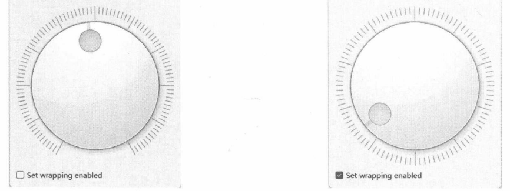
图 12-11 QDial 的 wrapping 属性为 False 图 12-12 QDial 的 wrapping 属性为 True
12.4
QLCDNumber
QLCDNumber组件模拟LCD屏幕，可以显示数字以及少量的字母和符号（如A、C、H、L、Y、g、-等)。如果传递给QLCDNumber组件的内容中包含不支持的字符，将以空格替代。
要设置 QLCDNumber 组件的显示内容，应调用 display 方法，该方法有以下 3个重载：
def display(num: float): ...
def display(num: int): ...
def display(text: str): ...
前两个重载分别向参数传递整型和浮点数值，第3个重载向参数传递的是字符串内容。字符串内容中如果存在不支持的字符，QLCDNumber组件将用空格替代。
12.4.1 示例：显示整数和浮点数本示例将创建两个QLCDNumber实例，分别用于显示整数值和浮点数值。核心代码如下：
win = QWidget()
layout = QFormLayout()
win.setLayout(layout)
lcd1 = QLCDNumber(win)
#显示整数
lcd1.display(1234)
layout.addRow("显示整数：", lcd1)
lcd2 = QLCDNumber(win)
#显示浮点数
lcd2.display(0.25)
layout.addRow("显示浮点数：", lcd2)
上述代码的运行结果如图12-13所示。
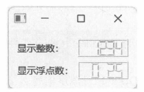
图12-13 显示整数和浮点数
12.4.2 示例：切换进制QLCDNumber组件默认显示十进制数值，调用setMode方法可以设置为二进制、八进制或十六进制，也可以使用以下便捷方法来切换进制。
setBinMode #二进制
setHexMode #十六进制
setOctMode #八进制
setDecMode #十进制
本示例将使用QLCDNumber组件来显示整数值36，并且支持切换不同进制的数值。DemoWindow类的实现代码如下：
class DemoWindow(QWidget):
def __init__(self):
super().__init__()
self.initUI()
def initUI(self):
#布局
layout = QGridLayout()
self.setLayout(layout)
# QLCDNumber 组件
self.lcdNum = QLCDNumber(self)
#设置显示位数
self.lcdNum.setDigitCount(10)
#设置数值
self.lcdNum.display(36)
layout.addWidget(self.lcdNum, 0, 0, 1, 4)
#4个按钮，用于切换4种进制
self.btnDec = QPushButton("十进制", self)
self.btnBin = QPushButton("二进制", self)
self.btnOct = QPushButton("八进制", self)
self.btnHex = QPushButton("十六进制",self)
layout.addWidget(self.btnDec, 1, 0)
layout.addWidget(self.btnBin, 1, 1)
layout.addWidget(self.btnOct, 1, 2)
layout.addWidget(self.btnHex, 1, 3)
#连接clicked信号
self.btnDec.clicked.connect(self.lcdNum.setDecMode)
self.btnBin.clicked.connect(self.lcdNum.setBinMode)
self.btnOct.clicked.connect(self.lcdNum.setOctMode)
self.btnHex.clicked.connect(self.lcdNum.setHexMode)
在实例化 QLCDNumber组件后，调用 setDigitCount方法设置该组件能显示的最大数位。此处设置为10，能显示10个字符。由于默认的位数是5，无法容纳36的二进制值（100100）。4个QPushButton组件分别用于切换 4 种进制，它们的 clicked 信号依次连接到 setDecMode、setBinMode、setOctMode 和setHexMode方法。单击某个按钮后，与 clicked信号连接的方法就会被调用。
运行示例程序，默认显示十进制数值36，如图12-14所示。
单击“二进制”按钮，就会显示为二进制数值，如图12-15所示。
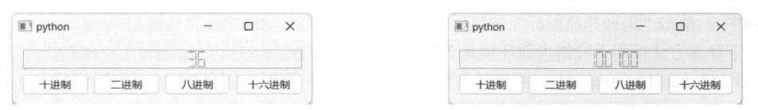
图12-14 显示十进制数值 图12-15 显示二进制数值
12.5
托盘图标
许多桌面环境都有一个特殊的区域叫“系统托盘”（或“通知区域”)，应用程序可以向系统托盘区域添加自己的图标。应用程序可以隐藏主窗口长期运行，并通过系统托盘中的图标与用户交互。例如，托盘图标可以在需要时向用户发出提示信息，也可以在图标上添加上下文菜单，用户通过菜单命令执行常用任务。
应用程序可以通过QSystemTrayIcon类显示、隐藏系统托盘图标，或设置上下文菜单。由于不需要呈现窗口部件，QSystemTrayIcon 并不从 QWidget 类派生，而是从 QObject 派生。但 QSystemTrayIcon实例可以与 QWidget 对象建立对象树关系——QWidget 对象是 QSystemTrayIcon 对象的父级。
12.5.1 示例：显示和隐藏托盘图标要在系统托盘中显示图标，需要调用 QSystemTrayIcon 类的 show 方法；相反地，调用 hide 方法可以隐藏图标。
本示例在程序窗口上垂直放置两个按钮。第一个按钮的功能是显示托盘图标，第二个按钮的功能是隐藏图标。程序代码如下：
win = QWidget()
#窗口标题
win.setWindowTitle("显示或隐藏系统托盘图标")
#窗口大小
win.resize(200, 160)
#垂直布局
layout = QVBoxLayout()
win.setLayout(layout)
#两个按钮
btnShow = QPushButton("显示托盘图标", win)
btnHide = QPushButton("隐藏托盘图标",win)
layout.addWidget(btnShow)
layout.addWidget(btnHide)
#初始化图标
sysTray = QSystemTrayIcon(QIcon("clock.png"), win)
#连接按钮的clicked信号
def showIcon():
#显示图标
sysTray.show()
def hideIcon():
#隐藏图标
sysTray.hide()
btnShow.clicked.connect(showIcon)
btnHide.clicked.connect(hideIcon)
运行示例程序，单击窗口上的“显示托盘图标”按钮，桌面的系统托盘区域就会多出一个图标（当前应用程序）；单击“隐藏托盘图标”按钮后，系统托盘区域将移除刚刚设置的图标。
以下静态方法可用于检测当前环境是否支持系统托盘图标。
isSystemTrayAvailable:系统托盘当前是否可用。若可用则返回True，否则返回False。
supportsMessages：系统托盘是否支持显示消息通知。返回True表示支持，False表示不支持。
12.5.2 示例：添加上下文菜单本示例将演示在托盘图标上添加上下文菜单，用户右击系统托盘上的图标即可调出上下文菜单。
在初始化 QSystemTrayIcon 实例后，创建 QMenu 实例，再通过 addAction 方法添加菜单项。本示例会添加三个菜单：“显示/隐藏主窗口”“命令1”“命令2”。代码如下：
trayIco = QSystemTrayIcon(QIcon("icon.png"), window)
#添加上下文菜单
menu = QMenu(window)
action1 = menu.addAction("显示/隐藏主窗口")
action1.setCheckable(True)
#连接信号
action1.toggled.connect(window.setVisible)
#另外两个菜单项
action2 = menu.addAction("命令1")
action2.triggered.connect(lambda:QMessageBox.information(window,"提示","执行【命令1】"))
action3 = menu.addAction("命令2")
action3.triggered.connect(lambda:QMessageBox.information(window,"提示","执行【命令2】"))
trayIco.setContextMenu(menu)
#显示图标
trayIco.show()
#默认显示窗口
action1.setChecked(True)
第一个菜单项“显示/隐藏主窗口”通过 setCheckable 方法开启 check 功能，再把 QAction 对象的 toggled 信号连接到窗口对象的 setVisible 方法，就可以用菜单项的 check 状态控制窗口显示或隐藏。另外两个菜单项均处理 triggered 信号，并用消息对话框显示文本信息。
在初始化上下文菜单后，必须调用 QSystemTrayIcon 对象的 setContextMenu 方法进行关联，否则托盘图标无法显示菜单。
示例程序运行后，桌面的系统托盘中会显示应用程序图标。右击图标，会弹出上下文菜单，如图 12-16 所示。
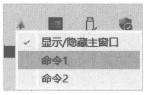
图12-16 托盘图标的上下文菜单
12.5.3 示例：发送“气球”消息系统托盘图标可以向用户展示“气球”消息，消息的出现位置一般在托盘图标上方或系统通知栏附近（如 Windows 11）。调用以下方法即可发送消息：
def showMessage(
title: str,
msg: str,
icon: QSystemTrayIcon.MessageIcon = ...,
msecs: int = ...
)
def showMessage(
title: str,
msg: str,
icon: Union[QIcon, QPixmap],
msecs: int = ...
)
title参数指定消息的标题，msg参数指定消息的内容。icon参数指定显示的图标，该参数有两种使用方案。
使用系统图标。由QSystemTrayIcon.MessageIcon 枚举的值来指定。Information 表示普通信息通知，Warning为警告消息，Critical的严重程度较高，表示错误信息。
使用自定义的图标。类型为 QIcon对象或 QPixmap 对象。
msecs参数指定消息的持续时间，单位是毫秒，默认为10000。
本示例的主界面允许输入消息标题和内容，以及选择消息持续时间。4个按钮代表4种系统图标—NoIcon、Information、Warning 和 Critical。
MyWindow类的实现代码如下：
class MyWindow(QWidget):
def __init__(self):
super().__init__()
layout = QFormLayout()
self.setLayout(layout)
#消息标题
self.titleEdit = QLineEdit(self)
layout.addRow("标题：", self.titleEdit)
#消息内容
self.bodyEdit = QLineEdit(self)
layout.addRow("内容：", self.bodyEdit)
#消息持续时间
self.slidOn = QSlider(Qt.Orientation.Horizontal, self)
#范围：2~10秒
self.slidOn.setRange(2, 10)
layout.addRow("持续时间：", self.slidOn)
#按钮组
self.btnGroup = QButtonGroup(self)
self.btnGroup.addButton(QPushButton("无图标", self), 0)
self.btnGroup.addButton(QPushButton("信息", self), 1)
self.btnGroup.addButton(QPushButton("警告", self), 2)
self.btnGroup.addButton(QPushButton("错误", self), 3)
#连接信号
self.btnGroup.idClicked.connect(self.onButtonClicked)
#布局按钮
btnlayout = QHBoxLayout()
for button in self.btnGroup.buttons():
btnlayout.addWidget(button)
layout.addRow(btnlayout)
#托盘图标
self.trayIco = QSystemTrayIcon(QIcon("wel.png"), self)
#图标可见
self.trayIco.setVisible(True)
#QButtonGroup.idClicked信号连接到此方法
def onButtonClicked(self, button_id: int):
title = self.titleEdit.text()
content = self.bodyEdit.text()
#确定所使用的图标
icons = [
QSystemTrayIcon.MessageIcon.NoIcon,
QSystemTrayIcon.MessageIcon.Information,
QSystemTrayIcon.MessageIcon.Warning,
QSystemTrayIcon.MessageIcon.Critical
]
icon = icons[button_id] if 0 <= button_id < len(icons) else icons[0]
#显示提示消息，QSystemTrayIcon 使用毫秒
self.trayIco.showMessage(
title, content, icon, self.slidOn.value() * 1000
)
4个按钮（QPushButton）组件由QButtonGroup 对象管理，idClicked 信号连接 onButtonClicked方法，然后根据id的值来确定显示消息时所使用的系统图标。
示例运行效果如图12-17所示。
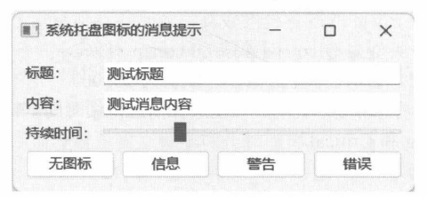
图12-17 设置“气球”消息的参数
12.6
工具提示
工具提示将呈现一个短暂的小窗口，用于说明某个组件的功能。工具提示一般使用简单的文本，如有特殊需求，也可以使用HTML标记。
12.6.1 示例：使用 setToolTip 方法QWidget类公开了setToolTip方法，设置工具提示非常方便。调用该方法时直接传递提示文本即可。
本示例将在窗口上创建两个按钮组件，然后调用setToolTip方法为按钮组件设置工具提示。详细的代码如下：
#程序窗口
window = QWidget()
#窗口标题
window.setWindowTitle("工具提示")
#布局
layout = QVBoxLayout()
window.setLayout(layout)
#两个按钮
btn1 = QPushButton("开 始", window)
btn2 = QPushButton("停 止", window)
layout.addWidget(btn1)
layout.addWidget(btn2)
#为按钮设置工具提示
btn1.setToolTip("单击此按钮开始游戏")
btn2.setToolTip("单击此按钮结束游戏")
#显示窗口
window.show()
运行应用程序后，将鼠标指针移动到按钮上并停留片刻，就会看到提示信息了，如图12-18所示。
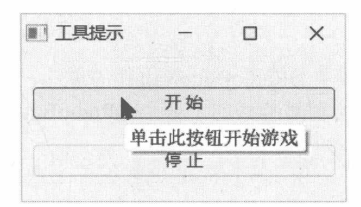
图12-18 按钮上的工具提示
12.6.2 示例：拦截 ToolTip 事件本示例将演示通过事件过滤器（Event Filter）拦截 ToolTip事件，然后调用 QToolTip类的 showText方法显示提示文本。showText是静态方法，可直接调用。
应用程序窗口中有3个QRadioButton组件。代码如下：
class CustWindow(QWidget):
def __init__(self):
super().__init__()
#布局
layout = QVBoxLayout()
self.setLayout(layout)
lbDisplay = QLabel("请选择一种模式：", self)
layout.addWidget(lbDisplay)
#3个单选按钮
self.rd1 = QRadioButton("模式-1", self)
self.rd2 = QRadioButton("模式-2", self)
self.rd3 = QRadioButton("模式-3", self)
layout.addWidget(self.rd1, 0, Qt.AlignmentFlag.AlignHCenter)
layout.addWidget(self.rd2, 0, Qt.AlignmentFlag.AlignHCenter)
layout.addWidget(self.rd3, 0, Qt.AlignmentFlag.AlignHCenter)
layout.addStretch(1)
......
3 个 QRadioButton 组件都安装事件过滤器，代码如下：
self.rd1.installEventFilter(self)
self.rd2.installEventFilter(self)
self.rd3.installEventFilter(self)
在窗口类中重写 eventFilter 方法。如果遇到 ToolTip 事件，就设置工具提示。
def eventFilter(self, watched: QObject, event: QEvent) -> bool:
#判断事件类型，只处理ToolTip事件
if event.type() == QEvent.Type.ToolTip:
#事件参数是 QHelpEvent 类型
helpev: QHelpEvent = event
#被监听对象是 QRadioButton 类型
rdButton: QRadioButton = watched
#提示文本
tipText = "Nothing"
#看看被拦截的是哪个 QRadioButton 实例
if rdButton is self.rd1:
tipText = "模式1：仅睡眠，不关机"
if rdButton is self.rd2:
tipText ="模式2：进入关机状态，但电源未切断"
if rdButton is self.rd3:
tipText = "模式3：关机，并且切断电源"
#显示提示信息
QToolTip.showText(helpev.globalPos(), tipText)
#返回值交给基类处理
return super().eventFilter(watched, event)
由于 eventFilter 方法拦截的是 3 个 QRadioButton 组件的事件，因此 watched 参数可能是 rd1，也可能是 rd2或 rd3。需要用 if语句判断当前被拦截的是哪个QRadioButton 组件，以便设置不同的提示文本。
if rdButton is self.rd1:
......
if rdButton is self.rd2:
......
if rdButton is self.rd3:
手动显示工具提示需要调用QToolTip.showText静态方法。该方法的声明如下：
def showText(
pos: QPoint,
text: str,
w: Optional[QWidget] = ...,
rect: QRect = ...,
msecShowTime: int = ...
)
pos 参数是提示信息显示的位置，需要指定全局坐标（屏幕坐标）。text 参数是要显示的文本。
w和 rect参数需要一起使用。w指的是要显示提示信息的对象，在本示例中是QRadioButton。rect是w内的某个矩形区域。这两个参数的含义是：当鼠标指针移出 rect所指定的区域后，工具提示就会隐藏。w和 rect参数都是可选的，调用 showText方法时可以忽略。
msecShowTime参数指定提示信息显示的时间，单位是毫秒。默认为-1，表示显示时间由提示文本的长度决定。文本内容越多，显示的时间越长。计算方法可以参考下面的C++源代码：
qsizetype time = 10000 + 40 * qMax(0, textLength - 100);
时长以10000毫秒（即10秒）为基础，当文本长度超过100字符时，每个字符延长40毫秒。
示例程序的运行结果如图12-19所示。
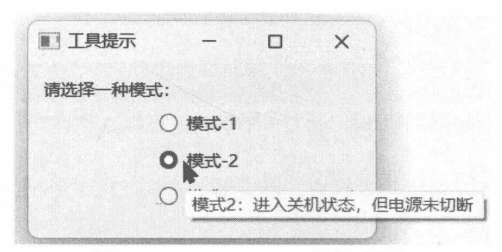
图 12-19 QRadioButton 的提示信息
12.6.3 示例：在工具提示中使用HTMLQt的工具提示文本支持使用HTML。本示例将创建一个包含3个字段的表单窗口，其中“货号”和“数量”字段的输入框设置了工具提示。
3 个 QLineEdit 组件将通过 QFormLayout 对象布局，代码如下：
layout = QFormLayout()
window.setLayout(layout)
#第一行
txtNo = QLineEdit(window)
layout.addRow("货号:", txtNo)
#第二行
txtQty = QLineEdit(window)
layout.addRow("数量：", txtQty)
#第三行
txtRem = QLineEdit(window)
layout.addRow("备注：",txtRem)
为前两个QLineEdit组件设置工具提示文本，采用HTML格式。代码如下：
html = """
<p>格式:<i>[品类]-[日期]-[序号]</i></p>
<table>
<tr>
<td>[品类]: </td>
<td>用两个字母表示货物类型，如服装类货物就使用"Fz"，工艺品类就用"GY"</td>
</tr>
<tr>
<td>[日期]:</td>
<td>进货日期，格式为yyyyMMdd，如20190524</td>
</tr>
<tr>
<td>[序号]:</td>
<td>入库序号，用四位数字表示.如0001、0057</td>
</tr>
</table>
<p>
例如: <span style="color:blue">FZ-20221028-0073</span>
</p>
"""
txtNo.setToolTip(html)
html = """
<p>填写货物数量，包含单位</p>
<p>
例如: <span style="color: navy;">15 条</span>、<span style="color: orangered;">
100 张</span>、<span style="color: green;">97 套</span>等
</p>
"""
txtQty.setToolTip(html)
运行示例程序，然后将鼠标指针移动到“货号”字段的文本输入框内，稍等片刻，就会出现如图12-20所示的提示信息。
将鼠标指针移到“数量”字段的输入框内，就会看到如图12-21所示的工具提示。
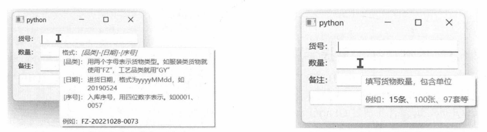
图12-20“货号”字段的提示文本 图12-21 “数量”字段的工具提示
12.6.4 示例：修改调色板在Qt应用程序内部，工具提示是由QLabel组件呈现的，因此通过修改调色板相关参数，可以自定义工具提示的文本以及背景颜色。QToolTip类提供了获取和设置调色板的静态方法：palette方法返回正在使用的调色板，setPalette方法则用于设置新的调色板对象（QPalette类的实例）。
本示例通过调色板对象，将工具提示的文本设置为白色，背景为黑色。自定义窗口类的代码如下：
class DemoWindow(QWidget):
def __init__(self):
super().__init__()
#布局
rootLayout = QVBoxLayout()
self.setLayout(rootLayout)
#选项1
self.chBox1 = QCheckBox(self)
self.chBox1.setText("启动时加载历史记录")
rootLayout.addWidget(self.chBox1)
#选项2
self.chBox2 = QCheckBox(self)
self.chBox2.setText("下载元数据")
rootLayout.addWidget(self.chBox2)
#选项3
self.chBox3 = QCheckBox(self)
self.chBox3.setText("关闭时备份")
rootLayout.addWidget(self.chBox3)
#设置工具提示
self.chBox1.setToolTip("程序启动时读取上一次的阅读记录")
self.chBox2.setToolTip("自动下载正在阅读的资料的最新消息")
self.chBox3.setToolTip("程序退出时保存资料的阅读记录")
修改工具提示的调色板需要在初始化窗口之前完成。由于某些系统主题会导致工具提示的调色板失效（例如“WindowsVista”主题），所以需要先修改应用程序的默认主题。代码如下：
app = QApplication()
app.setStyle("Fusion")
如果想知道当前系统环境支持哪些主题名称，可以使用下面的代码将它们打印到屏幕上：
print(QStyleFactory.keys())
下面代码先从QToolTip类中获取现有的调色板，然后修改文本和背景颜色，最后调用 setPalette方法设置新的调色板。
palette = QToolTip.palette()
#修改颜色
palette.setColor(QPalette.ColorGroup.Inactive,
QPalette.ColorRole.ToolTipBase,
QColor("black"))
palette.setColor(QPalette.ColorGroup.Inactive,
QPalette.ColorRole.ToolTipText,
QColor("white"))
#设置调色板
QToolTip.setPalette(palette)
工具提示所在的颜色分组是Inactive（非活动窗口），颜色角色分别是ToolTipBase（工具提示窗口的背景颜色）和ToolTipText（工具提示窗口的文本颜色）。
示例程序运行后的效果如图12-22所示。
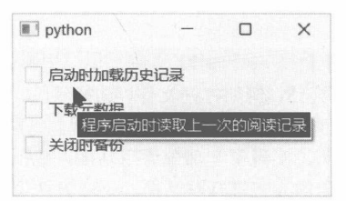
图12-22 自定义工具提示的外观